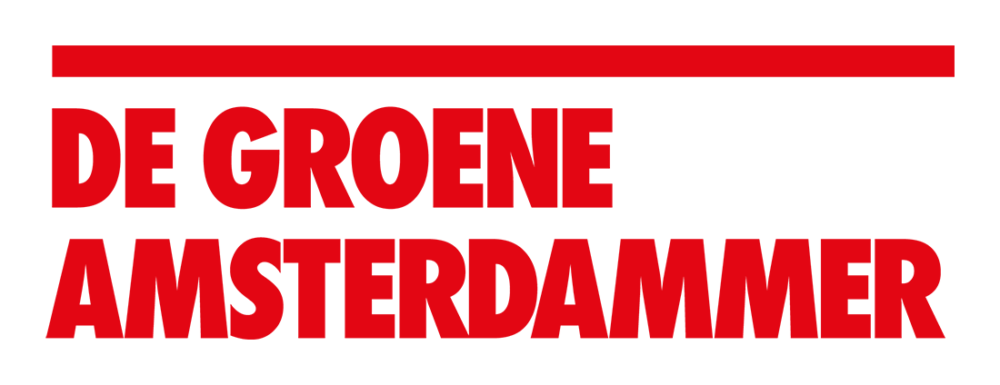

Achtergrond
Methode
De Campagnemonitor is een samenwerking tussen De Groene Amsterdammer en Who Targets Me, een wereldwijde database van politieke advertenties op sociale media. Samen met UvA-onderzoeker Fabio Votta volgen we politieke advertenties in aanloop naar de Nederlandse parlementsverkiezingen van 2023. Dat doen we om beter te begrijpen hoe campagnes verschillende targetingmethoden gebruiken die beschikbaar zijn gesteld door Meta en Google.
Voor dit onderzoek hebben we gegevens uit de Meta Ad Library en het Google Transparency Report gebruikt. Op het dashboard laten we zien hoe er de afgelopen week en de afgelopen maand is getarget op persoonlijke kenmerken zoals leeftijd, locatie, levensstijl of overtuigingen
Google toont via het Google Transparency Report hoeveel geld door partijen is uitgegeven. Om in de Meta-reeksen te blijven passen, tonen we van Google ook de afgelopen zeven en dertig dagen.
Opmerking: Meta biedt als het gaat om targetingegevens slechts inzicht in de afgelopen zeven, dertig en negentig dagen. Het rapport wordt dagelijks, met enige vertraging, bijgewerkt.
Meer Info

De Groene Amsterdammer is het oudste opinieweekblad van Nederland, sinds 1877 onafhankelijk baken van de vrijzinnige meningsvorming op het gebied van politiek, maatschappij, cultuur en literatuur.

Wilt u zien hoe politieke partijen u targeten? Meld u aan bij Who Targets Me en download de gratis browserplugin om te zien hoe partijen op Facebook uw gegevens gebruiken:

Wilt u zelf targeting data ophalen uit de Meta Advertentiebibliotheek? Dit dashboard wordt aangedreven door het R package: metatargetr. Bekijk het hier: